КАМЕНЬ.
ИНЖЕНЕРИЯ.
РЕАЛИЗАЦИЯ.
Интерьерные и архитектурные решения из камня и крупноформатных материалов — от подбора и замера до производства и монтажа.
Санкт-Петербург · Ленинградская область · проекты по России
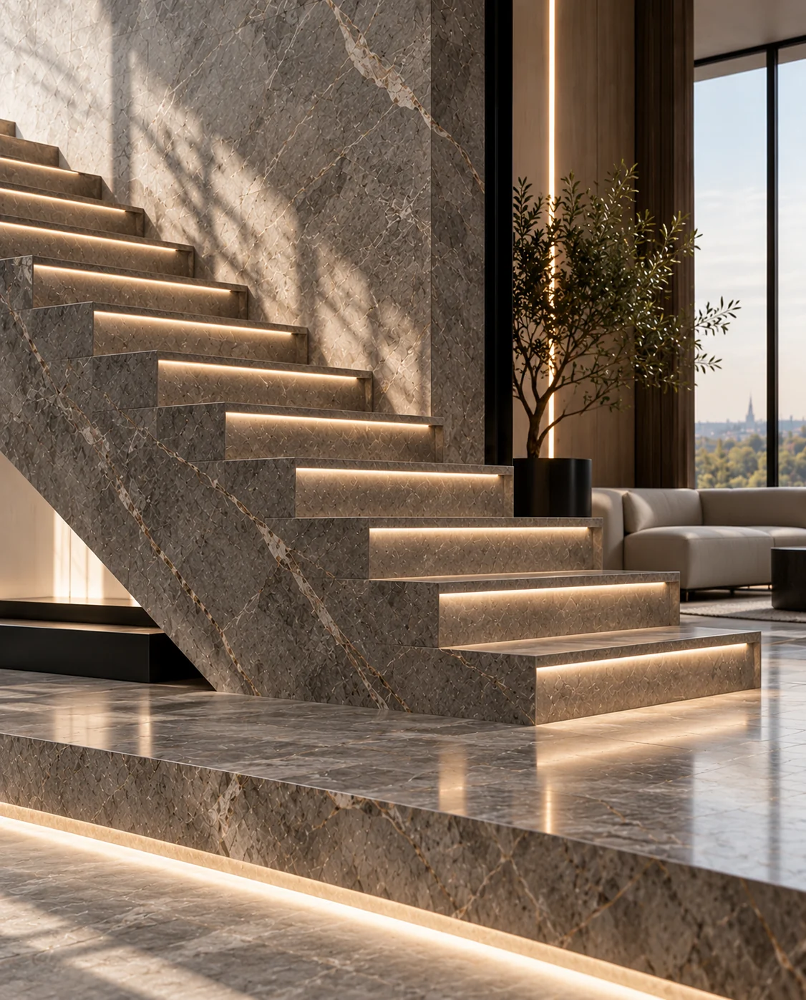
Материал. Форма. Пространство.От архитектурного замысла до последней деталиЛистайте вниз ↓
ОДИН ПОДРЯДЧИК — ОТ МАТЕРИАЛА ДО МОНТАЖА
Подбираем материал, выполняем замеры и проектирование, организуем производство, доставку и монтаж.
- Материал
- Инженерия
- Реализация
01 / Решения
ЧТО МЫ РЕАЛИЗУЕМ
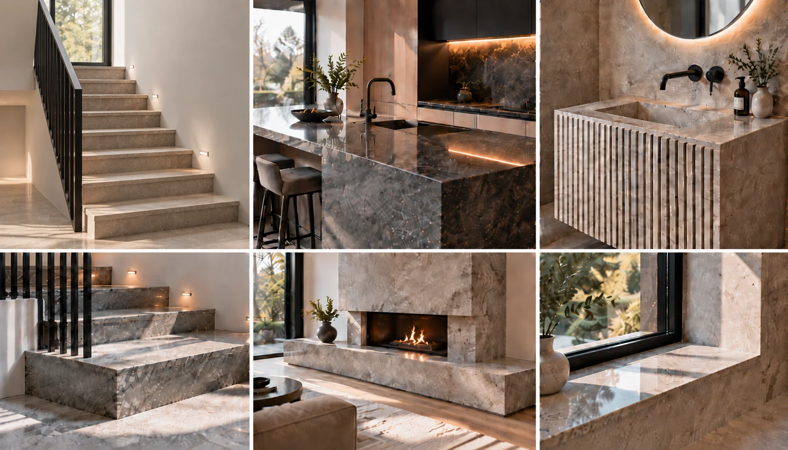
Визуализации направлений
02 / Опыт реализации
ПРОЕКТЫ
Портфолио комплектуется.
Запросите примеры под вашу задачу.
Камины и индивидуальные изделия
Запросить примеры ↗Входные группы и фасады
Запросить примеры ↗Чтобы получить примеры по вашему направлению, укажите тип изделия в запросе на расчёт.
03 / Материал
МАТЕРИАЛЫ,
ПОДОБРАННЫЕ ПОД ПРОЕКТ
Подбираем материал под архитектуру, условия эксплуатации и бюджет проекта у проверенных российских и зарубежных поставщиков.
- Мрамор
- Гранит
- Кварцит
- Травертин
- Оникс
- Кварцевый агломерат
- Керамогранит
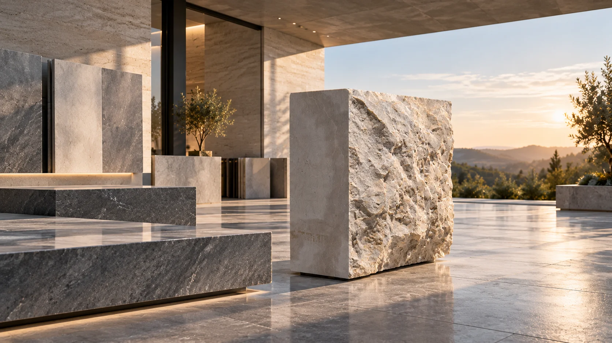
04 / От задачи до результата
КАК ПРОХОДИТ РАБОТА
Задача
Материал
Подбираем камень и формат.
Замер
Фиксируем геометрию и примыкания.
Проект
Готовим рабочие данные.
Производство
Монтаж
Результат
Проект / ТЗ
Получаем исходный проект.
Технический анализ
Проверяем узлы и реализуемость.
Материал
Согласуем камень и технологию.
Фактический замер
Уточняем геометрию объекта.
Рабочая документация
Готовим DWG/DXF и деталировку.
Производство
Передаём данные в изготовление.
Монтаж
Реализуем согласованное решение.
Контроль
Проверяем качество и соответствие.
05 / Технологическая реализация
ПРОИЗВОДСТВЕННЫЕ
ВОЗМОЖНОСТИ
Под конкретный материал, изделие и геометрию подбираем необходимую технологию обработки.
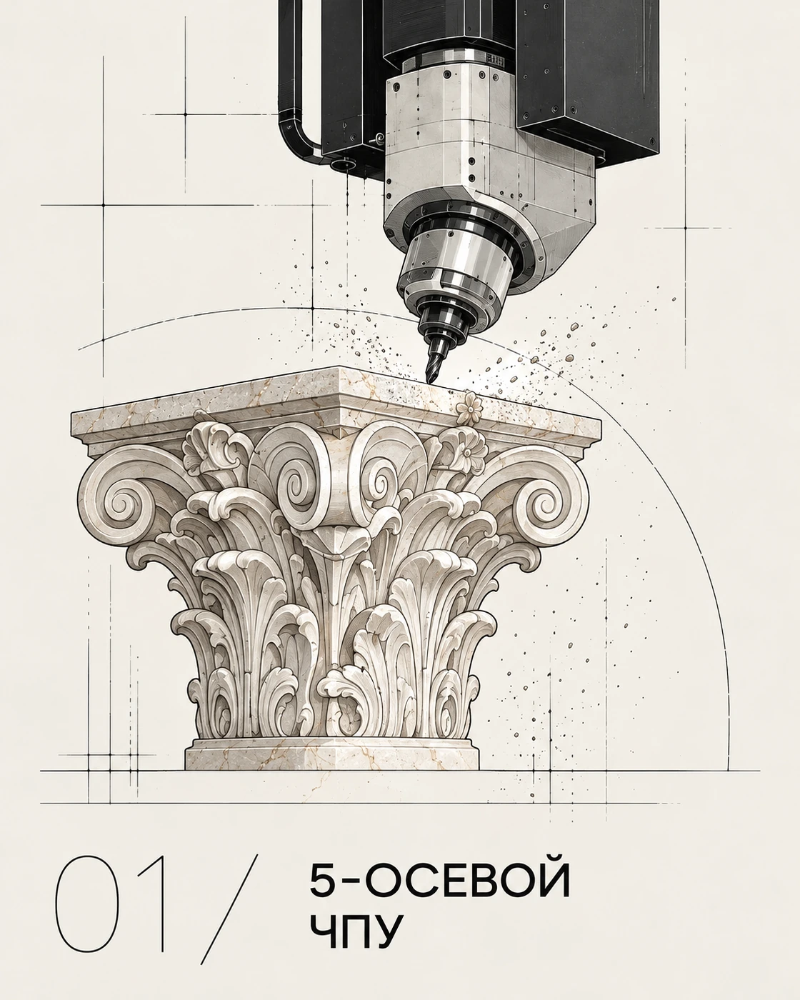
5-осевой ЧПУ
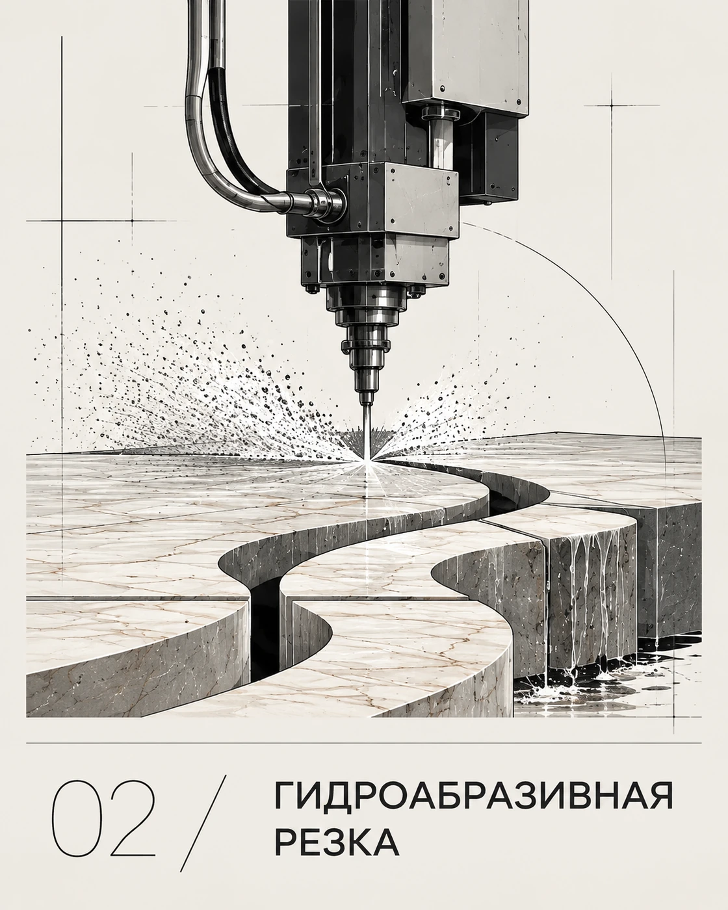
Гидроабразивная резка
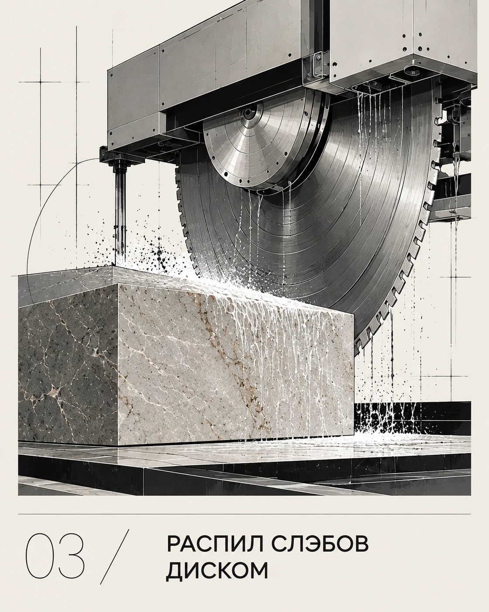
Распил слэбов диском
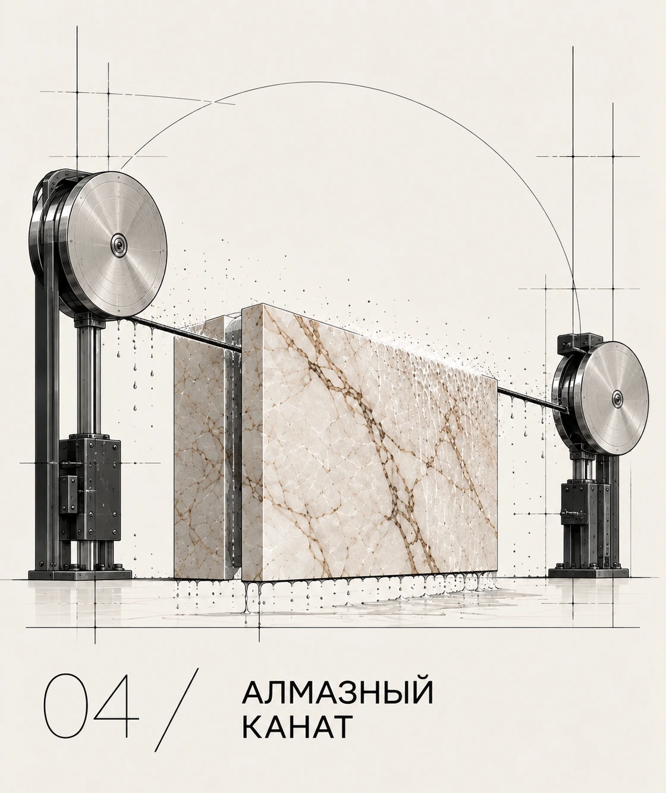
Алмазный канат
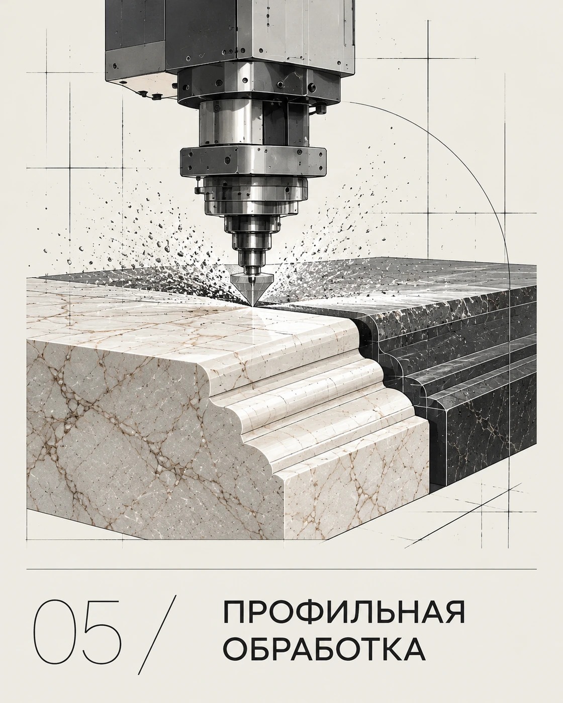
Профильная обработка
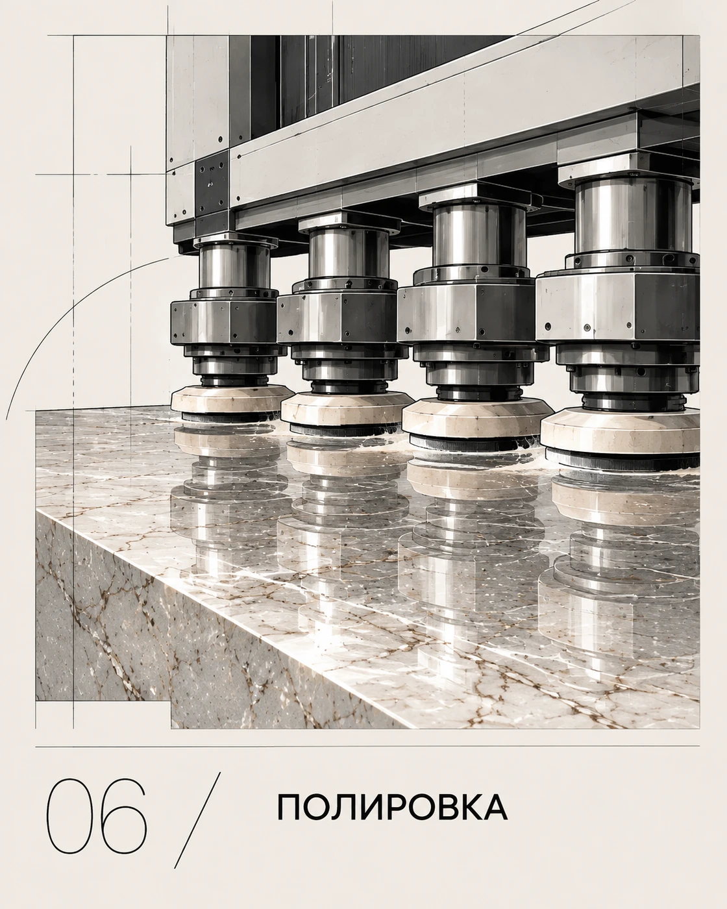
Полировка
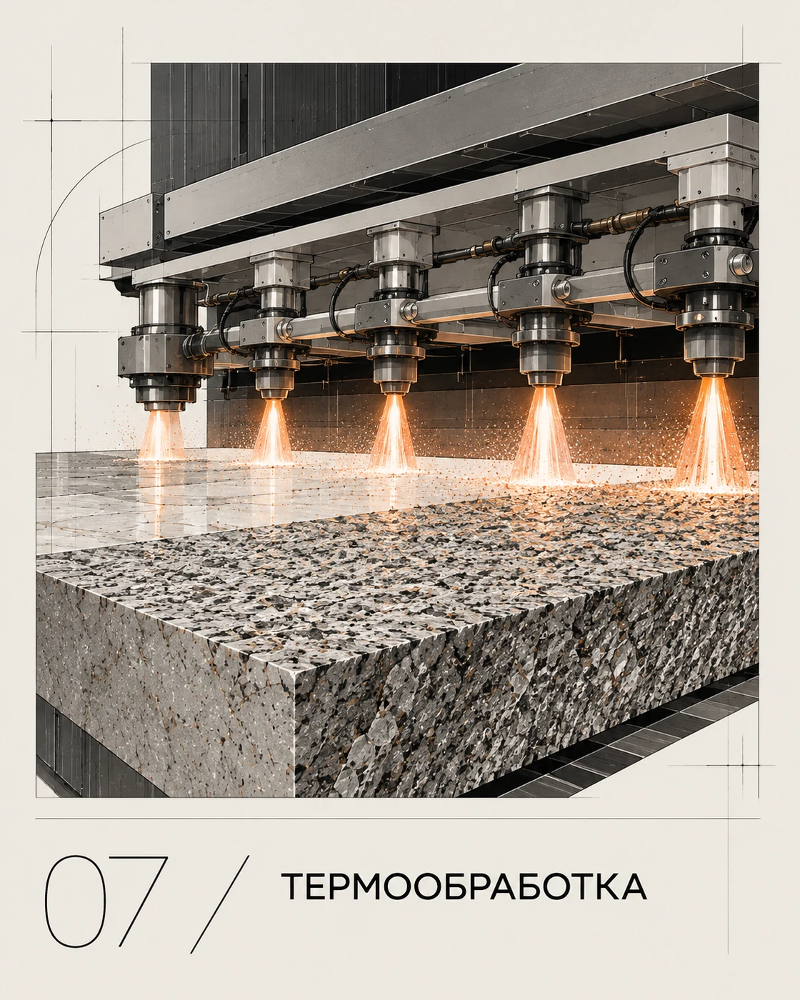
Термообработка
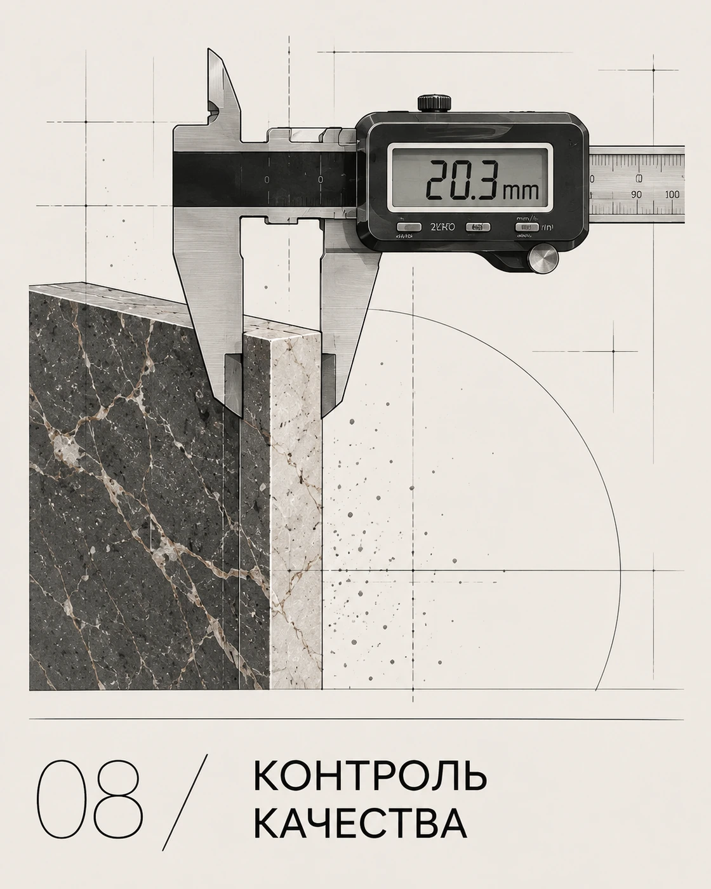
Контроль качества
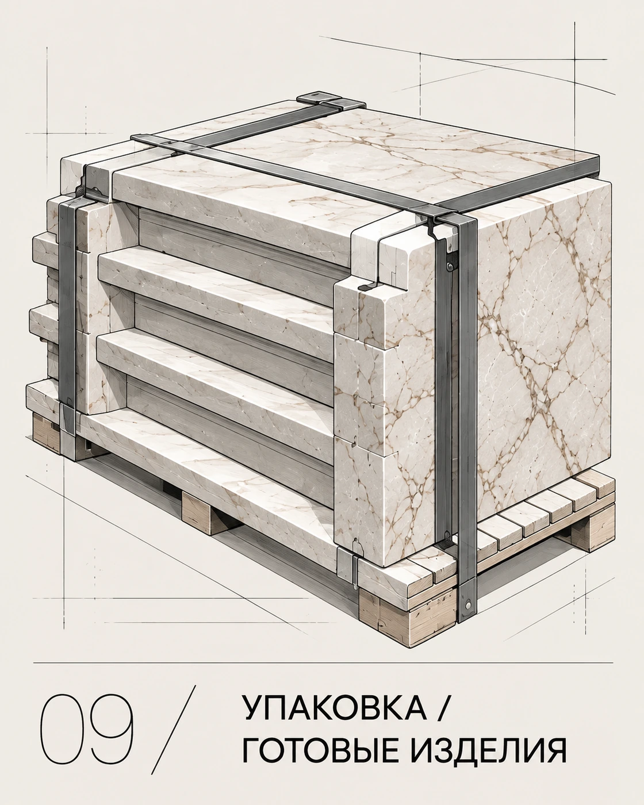
Упаковка / готовые изделия
Иллюстрации технологий обработки и подготовки изделий.
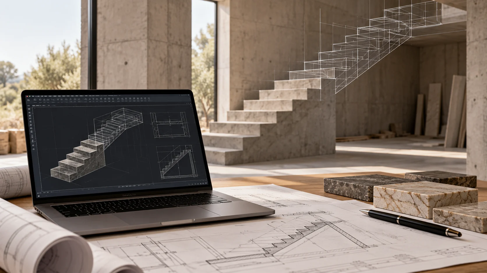
06 / Инженерный подход
ОТ ФАКТИЧЕСКОЙ ГЕОМЕТРИИ — К ГОТОВОМУ ИЗДЕЛИЮ
Для сложных изделий фиксируем фактическую геометрию объекта и готовим рабочие данные до запуска производства.
- Замер
- DWG / геометрия
- Производство
- Монтаж
Профессиональное измерительное оборудование Leica
ЕСТЬ ПРОЕКТ
ИЛИ ТОЛЬКО ИДЕЯ?
Пришлите чертёж, визуализацию или фотографии объекта. Предварительно оценим задачу и предложим следующий шаг.
07 / Начать проект
РАССКАЖИТЕ
О ВАШЕМ ПРОЕКТЕ
hello@roccastone.ru ↗Проектные и технические вопросы — Евгений
Материалы и комплектация — Ольга
Санкт-Петербург / Ленинградская область / проекты по России